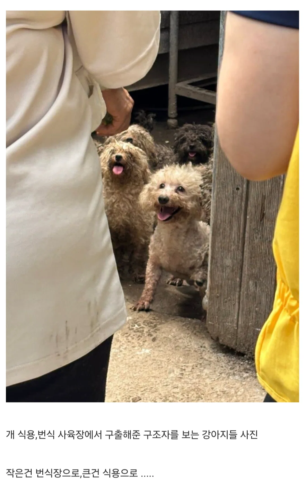
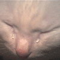

강아지들은 본능적으로 사람을 좋아한다는 증거.jpg
댓글
왜...멍뭉이들이 저렇게 밝게 웃는데 왜 기분이 나빠..
텍스트 두번째 줄이 기분나쁘잖아...............
ㅈ간이 미안해...
입안에 사우론의 눈이 보이는 거 같아.
예리한 녀석
잘 숨어있었는데
ㅠㅠ

왤케 ai같지
ai라고 생각하면 덜 기분나쁘니까 걍 ai라고 생각해야겠다
근데 왜 좋아하는거지?
전에 개들을 사람 좋아하는 유전자만 교배했다고했다는거 봤던거 같던데 그래서 저러나
만년 넘게 사람보고 꼬리치는 개들은 길러서 번식시키고, 덤비는 개들은 잡아먹던 인간의 선택이 누적된 결과지.
인간보고 덤비는 개들은 후손을 못 남겼거든
선사시대부터 사람무는 늑대는 죽이고 개량한거지
사람좋아하는 정신병걸린 늑대임
늑대는 죽이고 개랑 했다는줄 ㄷㄷㄷ
비록 그렇게 된건 과학적으론 딱딱하지만 그 결과는 사람을 참 뭉클하게 만들지
인간으로 치면 윌리엄스 보이렌증후군이라 불리는 정신병을 유전적으로 보유한 개체만 선택적으로 번식 시켜서 저렇게 된거
그와중에 가끔 돌연변이로 저 병 나은 개체가 나오면 사람 물어 죽이는 미친개 되는거고
인간으로 치면 외계인이 인간 식용으로 쓰는 비만유전자 낭낭하게 가진 애들만 번식 시키고
나머지는 싹 징그럽게 생겼다고 살처분을...!
식용 푸들이 어딨어 좆병신새끼야
보신탕집에서 소형견 관절수술한 쇠뭉치나온거보고말해라 작은건 번식장이라잖아
나 어릴때는 식용견종 이런거 없음 걍 다먹었음
작은건 번식장이라고 써있는데..
그렇게 고통받고도 그저 사랑한다니 이 얼마나 가엾고 애달픈지
신이 인간과같이 자신을 따라는 것만 살렸다면 모든 인간이 종교인이었겠네
그래서 신이 자비롭다는 반증인건가
가끔 생각해보면 기괴한것같아
유전교배해서 인간을봐야지만 삶의행복을 느끼게 설계한 생물같다고해야하나
뭐랄까 인간한테 공격적인 개들은 다 맞아죽고 순종적인 애들만 남아서 그런거 아닐까
개랑 인간이 같이 지낸게 엄청 기니까
제목이랑 사진이랑 본문글이랑 뭐 다 하나도 관련없노
근데 저 지옥에서 구해주는데 당연히 좋아하지 않나?
쟤가 살면서 본 인간들은 평생 호의적이지않았을텐데도 불구하고 저렇게 좋아하는거니까
모란시장에서 개고기 먹었던 적 있는데 생각보다 누린내 많이 나더라 맛은 염소고기하고 비슷함 이게 누린내 안 나려면 결국 식용견 거세를 해야 되는데, 이 과정이 수고스럽다 보니 누린내 나는 듯
내년 2월에 개고기 금지되니 마지막 찬스다
삭용견을 중성화 수술로 넘기고 다시회수
걍 염소 먹어 염소 맛있드만
우리 똥개 닭가슴살이나 줘야지 히히
개 4마리 키웠는데 입양 해오는게 맞더라
한그릇도 안나오겠구만;
후각이 좋으니 개장수 냄새는 무섭지만 구조자들 냄새는 위험하지 않다 느꼈겠지.. 다행이다 정말
소도 미소정도만 지을수 있으면 소고기 금지당했을텐데
근데 걔는 맛없었으면 아마 멸종했을거임
꼭 그렇지도 않은게 야생에서 번식해서 사람 손 안타본 개들은 생긴것만 개지 완전 늑대임
쟤들도 안씻겨서 더러울 뿐인거지 손은 다 태워놔서 저러는거
무인도에 혼자살아서 인간을 한번도 본적없는 개한테 사람이 다가가는 영상본적있는데 개가 무서워하면서도 좋아가지고 꼬리를 엄청치다가 쓰다듬어주니까 몇분되지도않아서 기뻐하더라고, 인간애기들이 강아지 좋아하는거처럼 강아지유전자에도 인간좋아본능이 박혀있는거같음
진짜 인간이 미안하다ㅠㅠ
ㅠㅠ

개입장에서 번식장은 숙식제공되는 난교 파티장임 ㄷㄷ;
번식장출신다운 댓글이에용
개는 진짜 남의 집 개가 제일 귀엽다 난 키울 자신이 없다 너무 귀엽지만 나중에 무지개 다리 건널때 감당이 안될거 같다
먼가 무섭게 생겼네,
기엽다
존나 기분 나쁜 글이네